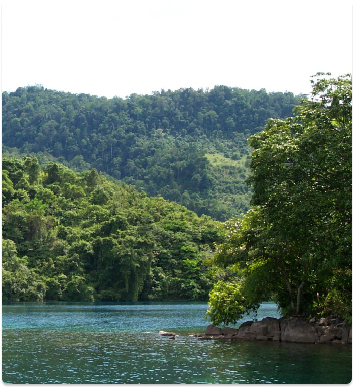

Lake Matano holds the distinction of being the deepest lake in the
country and ranks as the ninth deepest globally. Its stunning
beauty is one of the defining features of Sorowako.
In the adjacent photograph, you can see the spot where my
family and our friends would retreat to during holidays. it's not
reachable by car or any land vehicle; instead, a raft is needed to
access this remote location. Our trips there were always filled
with enjoyment, barbecues, and, of course, refreshing swims. This
is a sought-after destination for anyone visiting Sorowako, thanks
to its truly magnificent natural beauty.
